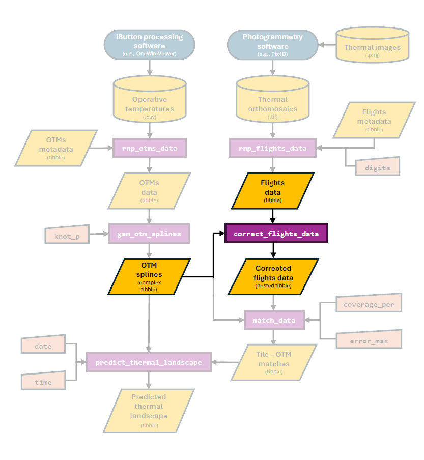
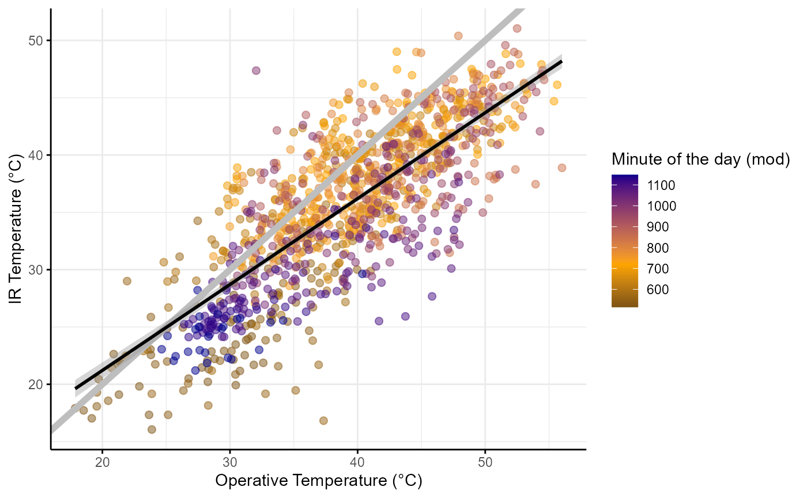
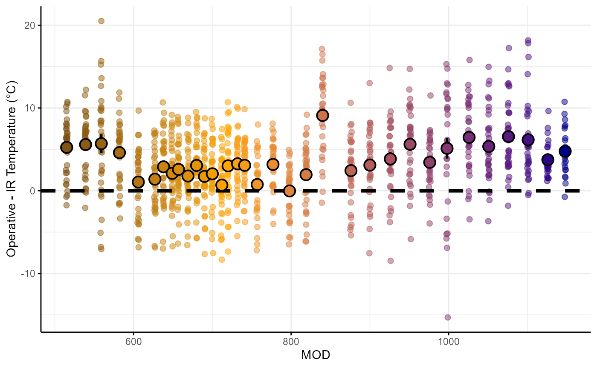
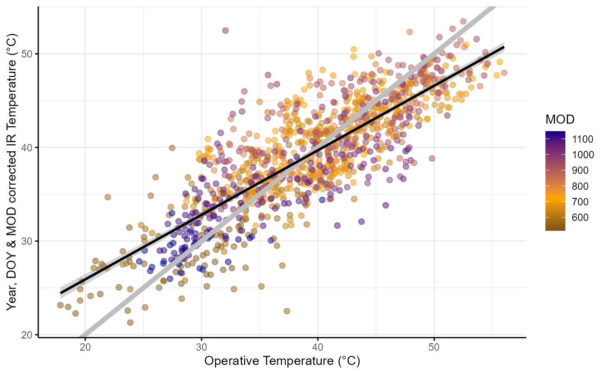
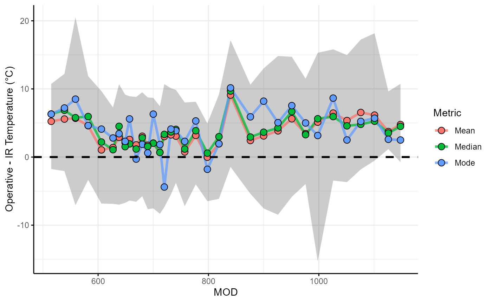
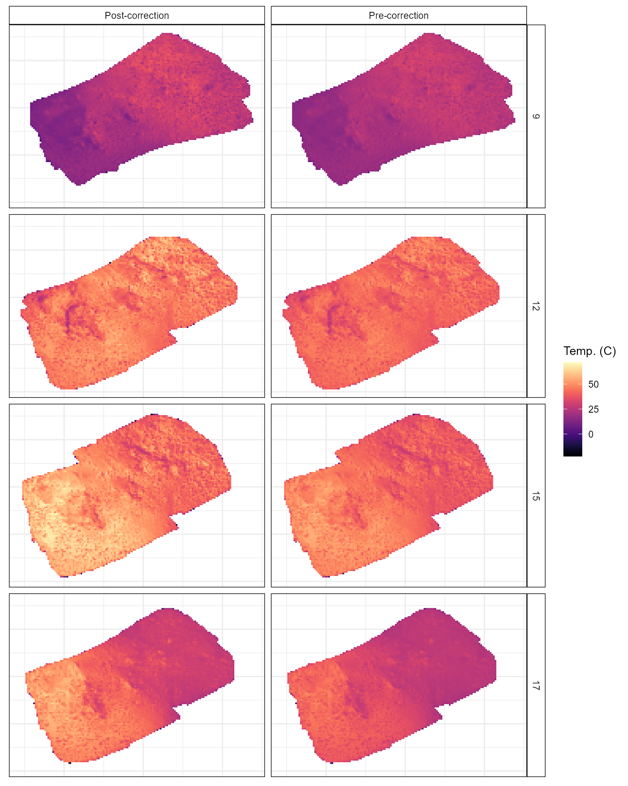

Correcting flight data
correct_flights_data.RmdOverview
In this vignette, our aim is to illustrate how to correct temperature data obtained using thermal photogrammetry. By correcting, we are referring to the process of transforming the temperature measurements made via the IR cameras mounted into the drone into operative temperatures as measured using an operative temperature model (OTM). Below we highlight the section of the package’s workflow that is covered in this vignette:

The need from this correction stems from the fundamental difference between temperature estimates made using an IR camera and those made by making physical contact with an object. This is because the IR camera measurement is influenced by a wide range of factors including the object’s emissivity, the conditions in which the image is taken (ambient temperature, amount of light etc. see Playà-Montmany & Tattersall 2021 for further details).
In contrast, OTMs are designed to record temperature measurements that match the internal body temperature of the organism as closely as possible. This is achieved by enclosing a temperature logger (e.g., an iButton) inside of a structure of a similar size and with similar surface and overall thermal properties to the the organism of interest. This methodology has been used extensively in the field of thermal ecology and recent advances have minimized the costs of production and maximized the accuracy of OTMs (see our past work in Alujević et al. 2024).
Due to the above, the IR camera of the drone and the OTM will ultimately record fundamentally different temperature metrics. For the thermal measurements estimated using the drone to be truly representative of what the organism is experiencing, they must be corrected such that they instead describe operative temperatures.
The correct_flights_data function
To transform temperature measurements obtained using a drone-mounted
IR camera into operative temperature measurements, the
throne package includes the
correct_flights_data function. This function will perform a
double correction on data obtained through a flight by correcting for 1)
differences in light conditions across multiple flights and 2) the
inherent difference in physical properties between IR and operative
temperature measurements.To perform such correction, the function will
take 2 inputs:
- A
flights_datatibbleobtained through thernp_flights_datafunction like the one below:
flights_data## # A tibble: 263,008 × 7
## longitude latitude ir_temp year doy mod_start mod_end
## <dbl> <dbl> <dbl> <dbl> <dbl> <dbl> <dbl>
## 1 -120. 39.9 12.5 2023 236 515 519
## 2 -120. 39.9 14.4 2023 236 515 519
## 3 -120. 39.9 14.0 2023 236 515 519
## 4 -120. 39.9 13.7 2023 236 515 519
## 5 -120. 39.9 14.6 2023 236 515 519
## 6 -120. 39.9 15.3 2023 236 515 519
## 7 -120. 39.9 14.5 2023 236 515 519
## 8 -120. 39.9 14.5 2023 236 515 519
## 9 -120. 39.9 13.9 2023 236 515 519
## 10 -120. 39.9 13.9 2023 236 515 519
## # ℹ 262,998 more rows- An
otm_splinesnestedtibbleobtained through thegen_otm_splinesfunction like the one seen below:
otms_splines## # A tibble: 132 × 9
## otm_id year doy microhabitat orientation latitude longitude elevation
## <chr> <dbl> <dbl> <chr> <chr> <dbl> <dbl> <dbl>
## 1 OTM01 2023 236 outcrop N 39.9 -120. 1312.
## 2 OTM01 2023 237 outcrop N 39.9 -120. 1312.
## 3 OTM01 2023 238 outcrop N 39.9 -120. 1312.
## 4 OTM01 2023 239 outcrop N 39.9 -120. 1312.
## 5 OTM02 2023 236 outcrop W 39.9 -120. 1313.
## 6 OTM02 2023 237 outcrop W 39.9 -120. 1313.
## 7 OTM02 2023 238 outcrop W 39.9 -120. 1313.
## 8 OTM02 2023 239 outcrop W 39.9 -120. 1313.
## 9 OTM03 2023 236 rock W 39.9 -120. 1317.
## 10 OTM03 2023 237 rock W 39.9 -120. 1317.
## # ℹ 122 more rows
## # ℹ 1 more variable: spline <list>Both data sets contain latitude and
longitude information. This is a crucial step for the
correction process, as the first task will be to filter the
flights_data to contain only tiles (i.e., unique
latitude and longitude combinations) where
OTMs were actually deployed.
Once these tiles are filtered, we will use the spline models to
estimate the temperature of each OTM at the exact year, day
of the year (doy) and minute of the day (mod)
at which each of the flights took place. The result will be a
tibble where each unique latitude &
longitude in each unique year,
doy and mod has an IR temperature measurement
(ir_temp, from the drone) associated with an operative
temperature measurement (op_temp, from the OTM) as seen
below:
correction_data## # A tibble: 1,114 × 8
## latitude longitude year doy mod_start mod_end ir_temp op_temp
## <dbl> <dbl> <dbl> <dbl> <dbl> <dbl> <dbl> <dbl>
## 1 39.9 -120. 2023 236 515 519 25.4 30.0
## 2 39.9 -120. 2023 236 515 519 20.5 26.8
## 3 39.9 -120. 2023 236 515 519 27.8 30.3
## 4 39.9 -120. 2023 236 515 519 21.3 28.3
## 5 39.9 -120. 2023 236 515 519 28.0 33.8
## 6 39.9 -120. 2023 236 515 519 20.4 19.7
## 7 39.9 -120. 2023 236 515 519 19.1 21.3
## 8 39.9 -120. 2023 236 515 519 22.9 28.5
## 9 39.9 -120. 2023 236 515 519 22.1 28.2
## 10 39.9 -120. 2023 236 515 519 19.9 30.5
## # ℹ 1,104 more rowsThe
tibbleabove contains themod_startandmod_endcolumns. These are themodwhen the flight started and when the flight ended. In the example data, all flights were relatively fast (~ 4 minutes) but to cover larger areas flights are going to be longer. In that case, the predicted operative temperature (op_temp) for that OTM on that tile is the average temperature for the duration of the flight.
Using this data we can visualize the need for a correction:

As shown above, there is a consistent bias between these two
measurements, with IR temperatures being generally cooler than operative
temperatures when both have high values and the opposite holding true
when both have low values. Note that the line of best linear fit is
substantially different from the gray line that indicates the ideal 1:1
relationship. This can be easily appreciated when running a simple
linear regression between ir_temp and
op_temp.
##
## Call:
## lm(formula = ir_temp ~ op_temp, data = correction_data)
##
## Residuals:
## Min 1Q Median 3Q Max
## -17.3750 -2.5640 0.0021 2.7808 17.1201
##
## Coefficients:
## Estimate Std. Error t value Pr(>|t|)
## (Intercept) 6.2269 0.6906 9.017 <2e-16 ***
## op_temp 0.7492 0.0174 43.052 <2e-16 ***
## ---
## Signif. codes: 0 '***' 0.001 '**' 0.01 '*' 0.05 '.' 0.1 ' ' 1
##
## Residual standard error: 4.184 on 1112 degrees of freedom
## Multiple R-squared: 0.625, Adjusted R-squared: 0.6247
## F-statistic: 1853 on 1 and 1112 DF, p-value: < 2.2e-16The (Intercept) and the slope (i.e., the
Estimate of op_temp above) are
6.23 and 0.75 when, ideally, we would want
them to be at 0 and 1 respectively. Further
the \(R^2\) (R-squared in
the model’s output) of this relationship is 0.625, for an
improved match between these two measurements we would also want \(R^2\) to be closer to 1.
It is in this step when we implement the first correction, that has
to do with the date and time of each flight. Because flights took place
at different days and in different mod both the
environmental temperature and the light conditions where variable. We
can visualize how the bias between measurements (i.e.,
op_temp - ir_temp) is different depending on
the mod.

Flights closer to the middle of the day (i.e., ~ 11:00 - 13:00 or
mod 660 - 800) when light conditions are optimal tend to be
less biased whereas flights earlier in the morning or the afternoon are
more affected by it. Based on this, the first correction will 1)
caculate the average bias for each flight and 2)
subtract that bias to all ir_temp measurements of
that flight. Once this correction is implemented the
relationship between ir_temp and op_temp looks
like:

##
## Call:
## lm(formula = ir_temp_corr ~ op_temp, data = correction_data)
##
## Residuals:
## Min 1Q Median 3Q Max
## -15.3410 -2.3108 -0.0795 2.0655 18.2656
##
## Coefficients:
## Estimate Std. Error t value Pr(>|t|)
## (Intercept) 12.11754 0.56523 21.44 <2e-16 ***
## op_temp 0.68946 0.01424 48.40 <2e-16 ***
## ---
## Signif. codes: 0 '***' 0.001 '**' 0.01 '*' 0.05 '.' 0.1 ' ' 1
##
## Residual standard error: 3.424 on 1112 degrees of freedom
## Multiple R-squared: 0.6781, Adjusted R-squared: 0.6778
## F-statistic: 2343 on 1 and 1112 DF, p-value: < 2.2e-16Although the model’s Intercept and slope have worsened
(from 6.22 to 12.11 and from 0.74
to 0.69) the \(R^2\) of
the model has improved (from 0.625 to 0.678)
as can be appreciated by the reduced amount of error around the line of
best fit.
From here, we will apply the second correction by correcting for the
temperature value itself. We do this by using the estimates of the
linear regression above to correct our IR temperature measurements
(already corrected by year, doy and
mod, as indicated by the *) into operative measurements
following the formula:
\[Fully\; corrected\; surface\; temperature = \frac{-Intercept + Time\; corrected\; surface\; temperature}{Slope}\]
If we implement the formula
# estimate op_temp after correction
correction_data$op_temp_corr <- (-12.11754 + correction_data$ir_temp_corr)/0.68946We can see that the Intercept of this relationship is
now at practically 0 and the slope at 1, which
is ideal:

##
## Call:
## lm(formula = op_temp_corr ~ op_temp, data = correction_data)
##
## Residuals:
## Min 1Q Median 3Q Max
## -22.2508 -3.3517 -0.1152 2.9959 26.4926
##
## Coefficients:
## Estimate Std. Error t value Pr(>|t|)
## (Intercept) -6.058e-06 8.198e-01 0.0 1
## op_temp 1.000e+00 2.066e-02 48.4 <2e-16 ***
## ---
## Signif. codes: 0 '***' 0.001 '**' 0.01 '*' 0.05 '.' 0.1 ' ' 1
##
## Residual standard error: 4.967 on 1112 degrees of freedom
## Multiple R-squared: 0.6781, Adjusted R-squared: 0.6778
## F-statistic: 2343 on 1 and 1112 DF, p-value: < 2.2e-16Below is an example of the effects of the correction across some of
the flights provided as example data sets in the throne
package. The columns across panels indicate if the plot shows a thermal
landscape of IR temperatures (Pre-correction) or corrected IR
temperatures now operative temperatures (Post-correction). The
rows indicate the mod of the day when the flight took
place:
